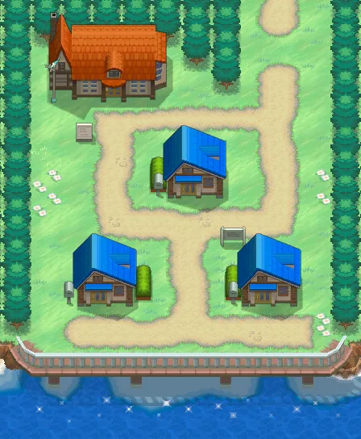
Pueblo Arcilla
Un pueblo pequeño y tranquilo con solo tres casas. Aquí viven el protagonista, Cheren y Bel, y empieza el viaje.
Generación 5 · Negro, Blanco, Negro 2 y Blanco 2
Teselia está muy lejos de las demás regiones y se inspira en Nueva York. Es la primera región que no se basa en Japón. Tiene ciudades enormes, como Ciudad Porcelana, con sus rascacielos, y puentes larguísimos. Además, la región cambia con las estaciones del año.
Pokémon Negro y Pokémon Blanco salieron en Japón en 2010 (en España, en 2011). Trajeron 156 Pokémon nuevos y, hasta terminar la historia, solo aparecen Pokémon nuevos. También añadieron los combates triples y los combates rotatorios. Dos años después llegaron Pokémon Negro 2 y Pokémon Blanco 2, en 2012.
El protagonista vive en Pueblo Arcilla con sus amigos Cheren y Bel. La Profesora Encina les deja elegir un Pokémon a cada uno y empieza el viaje. Tienen que conseguir las ocho medallas, vencer a la Liga y enfrentarse al Equipo Plasma, que quiere liberar a los Pokémon de sus entrenadores.
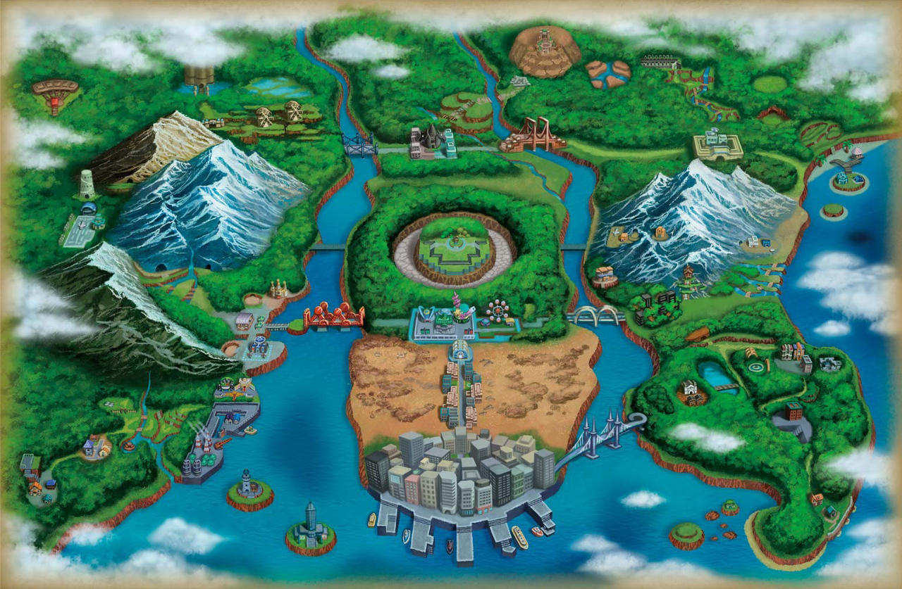
Mapa de la región de Teselia.

Un pueblo pequeño y tranquilo con solo tres casas. Aquí viven el protagonista, Cheren y Bel, y empieza el viaje.
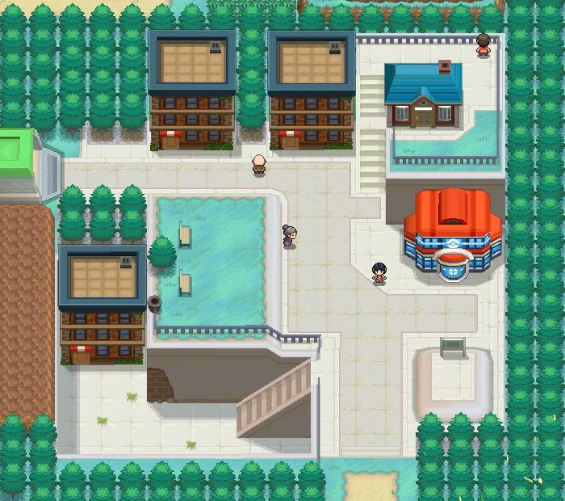
Un pueblo al que llegan los entrenadores nuevos. En su plaza, el Equipo Plasma da un discurso para convencer a la gente de que libere a sus Pokémon.
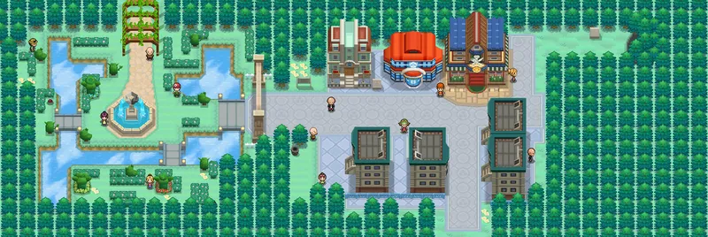
Una ciudad con un gimnasio que también es un restaurante. Allí te atienden tres hermanos que son los líderes.
Gimnasio: Planta Fuego Agua
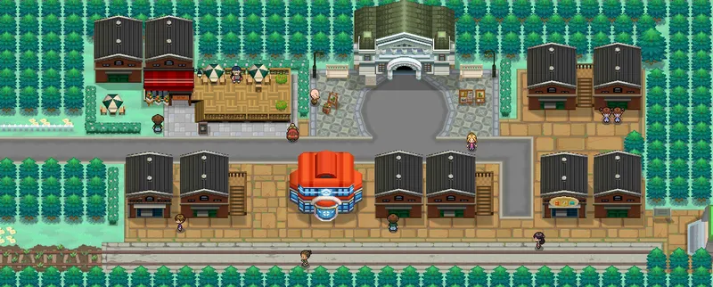
Una ciudad con un museo muy grande. Su directora, Aloe, es la líder del gimnasio.
Gimnasio: Normal
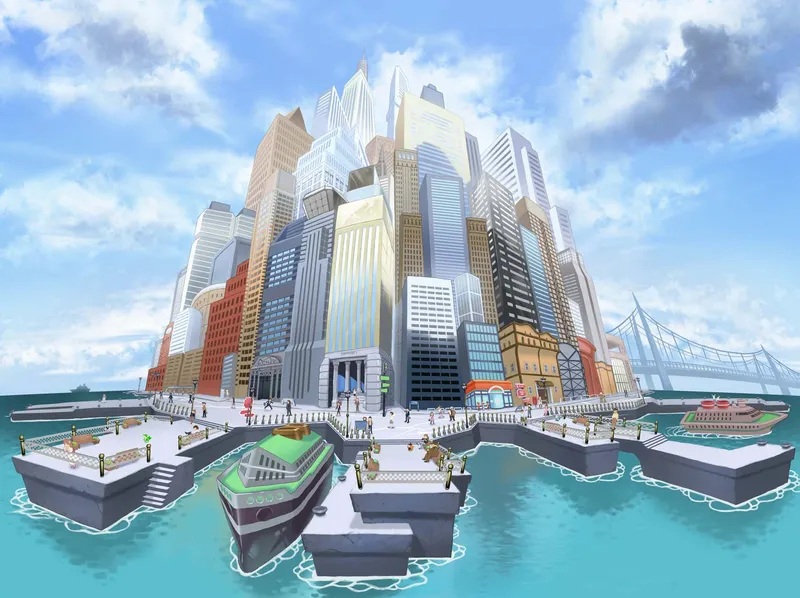
La mayor ciudad de Teselia, con enormes rascacielos y un puerto. Su gimnasio parece una galería de arte.
Gimnasio: Bicho
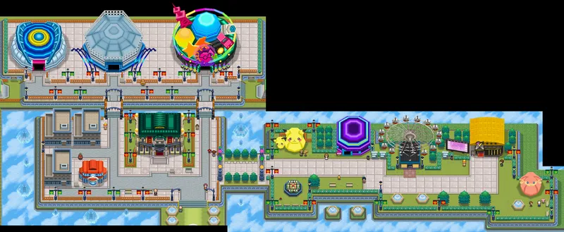
Una ciudad de diversión, con un parque de atracciones, una noria enorme y un teatro. El gimnasio está dentro de una montaña rusa.
Gimnasio: Eléctrico
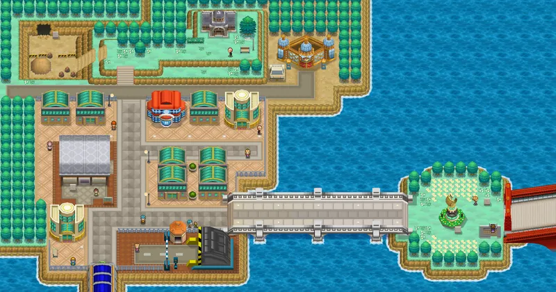
Una ciudad con un mercado y un puerto. Su líder es un minero y su gimnasio está bajo tierra.
Gimnasio: Tierra
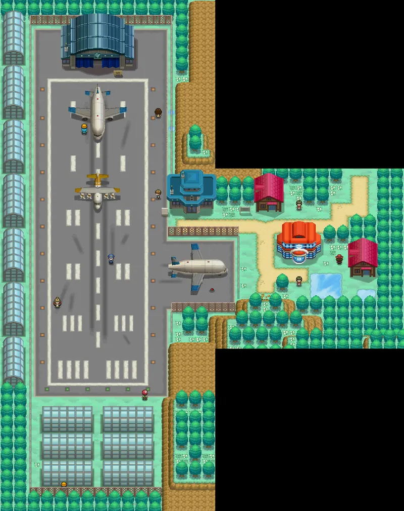
Una ciudad con un aeropuerto. Su líder, Gerania, es piloto y para llegar a ella hay que lanzarse desde un cañón.
Gimnasio: Volador
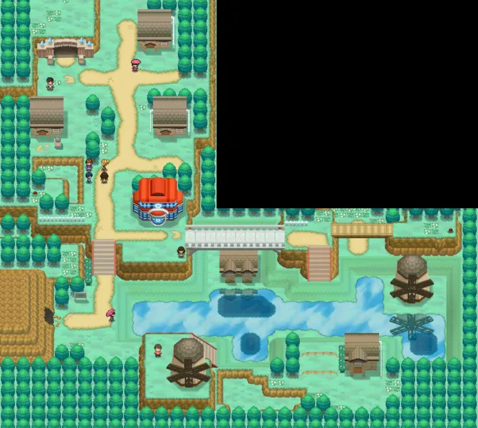
Una ciudad helada del norte. Su gimnasio está cubierto de hielo y hay que resbalar para avanzar.
Gimnasio: Hielo
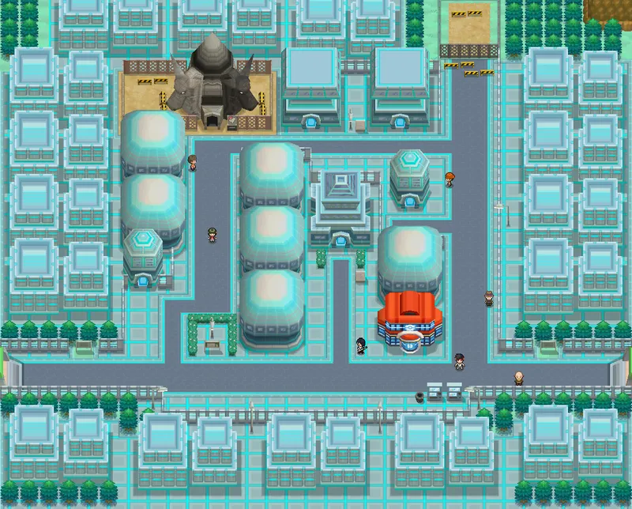
Una ciudad moderna donde viven los domadores de dragones. Su gimnasio está lleno de estatuas de dragones.
Gimnasio: Dragón
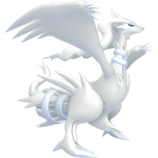
Dragón Fuego
El dragón blanco. Es el legendario de Negro y busca la verdad. Con su fuego puede quemar el mundo entero.
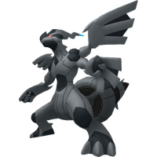
Dragón Eléctrico
El dragón negro. Es el legendario de Blanco y busca los ideales. Puede crear tormentas con sus rayos.
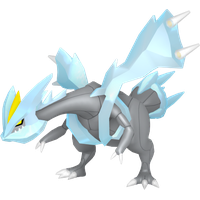
Dragón Hielo
Lo que sobró de la división del dragón original. Vive en el Boquete Gigante y tiene un cuerpo hueco, que congela todo.
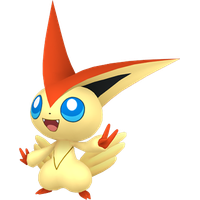
Psíquico Fuego
El Pokémon de la victoria. Da energía a quien está cerca. Solo se podía conseguir en eventos especiales.
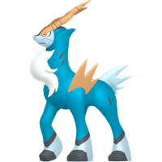
Acero Lucha
El líder de los Espadachines de la Justicia. Es serio y muy valiente. Se esconde en la Cueva Loza.
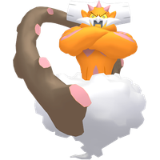
Tierra Volador
Uno de los tres Pokémon que traen la fertilidad al suelo de Teselia. Se consigue después de terminar la historia.
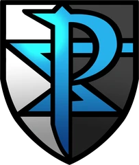
El Equipo Plasma dice que quiere liberar a los Pokémon de sus entrenadores. Su rey es N, un chico que habla con los Pokémon. Pero detrás de todo está Ghechis, que solo quiere el poder y usa a N.
Sus miembros llevan uniformes que parecen de caballeros medievales, con un escudo con una P. Los lidera Ghechis, que tiene el consejo de los Siete Sabios, y le sirven tres ninjas, el Trío Sombrío.
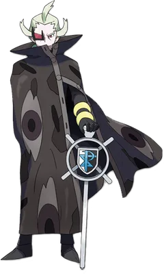
Líder del Equipo Plasma
El verdadero jefe del Equipo Plasma. Es frío y cruel y no le importan los Pokémon: solo quiere gobernar Teselia.
Los ocho gimnasios de Teselia, en el orden normal del viaje. En el primero te enfrentas a uno de los tres hermanos, según el Pokémon inicial que hayas elegido.
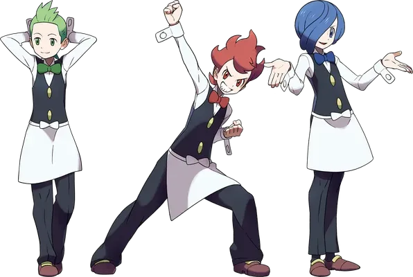
Ciudad Gres
Planta Fuego Agua · Medalla Trío
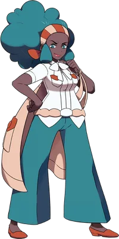
Ciudad Esmalte
Normal · Medalla Base
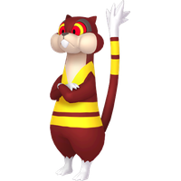
Pokémon estrellaWatchog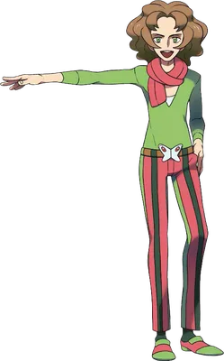
Ciudad Porcelana
Bicho · Medalla Élitro
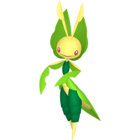
Pokémon estrellaLeavanny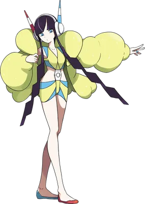
Ciudad Mayólica
Eléctrico · Medalla Voltio
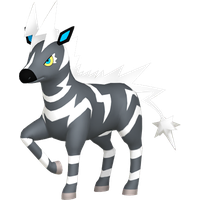
Pokémon estrellaZebstrika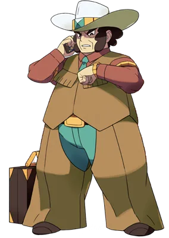
Ciudad Fayenza
Tierra · Medalla Temblor
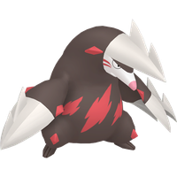
Pokémon estrellaExcadrill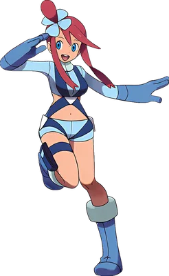
Ciudad Loza
Volador · Medalla Jet
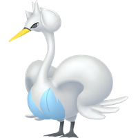
Pokémon estrellaSwanna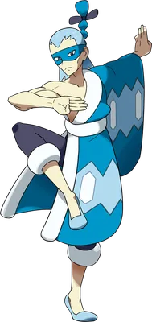
Ciudad Teja
Hielo · Medalla Candelizo
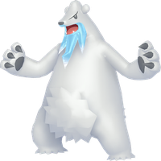
Pokémon estrellaBeartic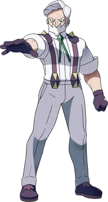
Ciudad Caolín
Dragón · Medalla Leyenda
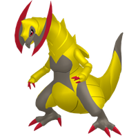
Pokémon estrellaHaxorusLa Liga está en lo alto de una colina, al norte de la Calle Victoria. Hay que tener las ocho medallas. Primero se vence al Alto Mando y, por último, al Campeón, pero el Palacio de N cambia el final de la historia.
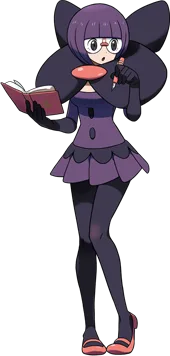
Alto Mando
Fantasma
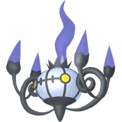
Pokémon estrellaChandelure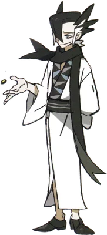
Alto Mando
Lucha
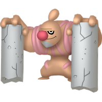
Pokémon estrellaConkeldurr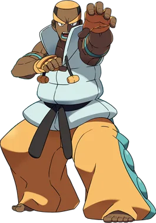
Alto Mando
Siniestro
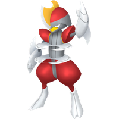
Pokémon estrellaBisharp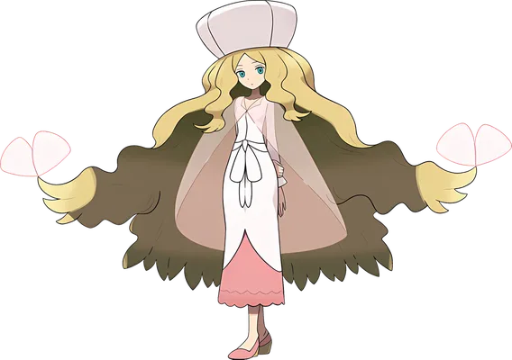
Alto Mando
Psíquico
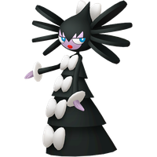
Pokémon estrellaGothitelle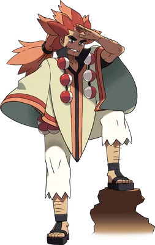
Campeón
El campeón de Teselia en Negro y Blanco. Es un entrenador muy experimentado. Tu combate con él se interrumpe porque llega N. En Negro 2 y Blanco 2 la campeona es Iris.
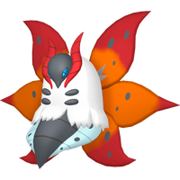
Pokémon estrellaVolcarona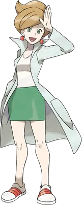
Investiga el origen de los Pokémon. Te da tu primer Pokémon y te pide que completes la Pokédex, la lista de todos los que existen.
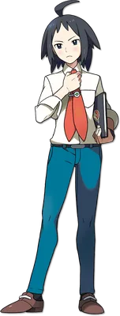
Tu amigo y rival. Es serio, estudioso y muy ambicioso. Quiere ser el más fuerte, y elige el Pokémon que tenga ventaja de tipo frente al tuyo.
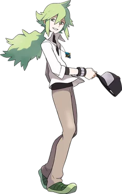
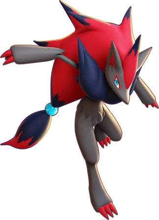
El rey del Equipo Plasma. Creció entre Pokémon y los entiende, pero no sabe cómo es el mundo real. Quiere liberarlos de verdad y no sabe que Ghechis le engaña.
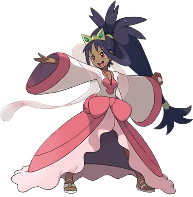
Es una gran domadora de dragones. En Blanco es la líder del gimnasio de Ciudad Caolín y, en Negro 2 y Blanco 2, la nueva campeona de la Liga.
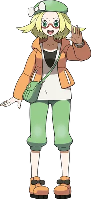
Tu otra amiga. Es tímida y le cuesta ganar, pero poco a poco se hace más fuerte. Elige el Pokémon que tiene desventaja de tipo frente al tuyo.